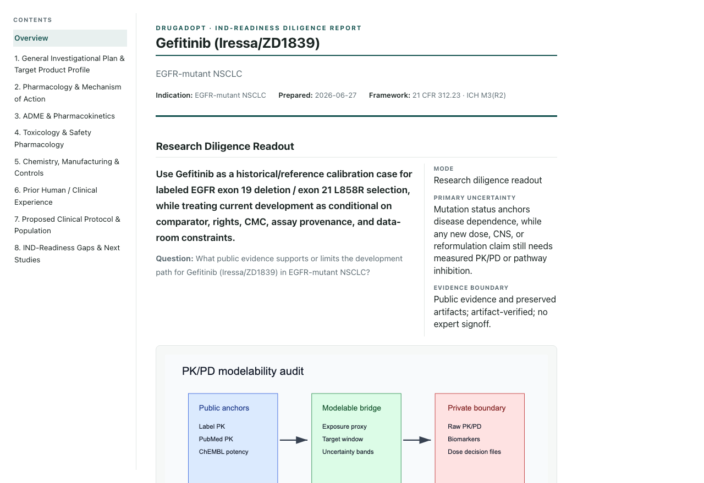

Biomarker- and evidence-grounded decision support.
DrugAdopt works your asset across the eight modules an IND has to answer, from the public record. Every identifier resolves, every claim is checked against its source, and the report is bound to a hash you can verify.
You get a decision packet, a gap map, and the sources behind every row.

What gets worked
The eight modules an IND has to answer.
Mapped to 21 CFR 312.23 and ICH M3(R2). Each one gets its own search log, its own artifacts, and its own semantic check that the sources say what the module claims they say.
Plan / TPP
The target product profile, the decision the report is being written to serve, and the scope it refuses.
Pharmacology
Target biology and mechanism, worked against public datasets rather than asserted from the label.
ADME
Absorption, distribution, metabolism, excretion, and whether public exposure data can sanity-check the dose.
Toxicology
Label liabilities, class effects, and which safety questions public data cannot close.
CMC
Identity, marketed-product framing, and what stays a data-room gate no matter how good the public record is.
Clinical
Trial history, what was designed, how it read out, and whether selection was the decision that mattered.
Protocol
Population, assay, endpoint, comparator, and dose rationale, tied to the evidence that supports each.
Gaps
What is missing, what would close it, and which gaps are business-model gates rather than science.